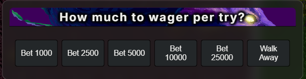
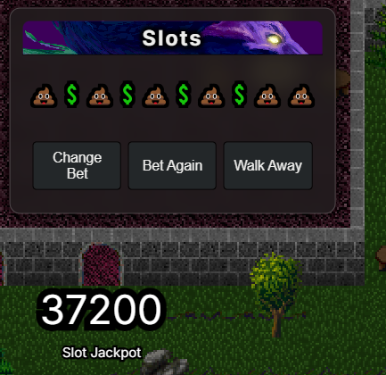
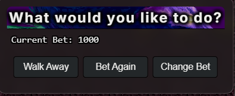

Overview
Slots is a simple luck-based minigame where players can gamble currency for a chance to win big.
The game works similarly to traditional slot machines — spin and hope for the best outcome.
Match the right symbols to claim the jackpot or smaller reward tiers.

Slots Interface
How It Works
Using the slots machine is straightforward:
- Select your bet amount
- Spin the slots
- Wait for the result
Each roll produces a sequence of symbols. The outcome determines whether you win, break even, or lose your bet.


Slot Menus and Roll example.
Symbols & Outcomes
There are two possible symbols per slot:
- $ (Money) — Winning symbol
- Poo — Losing symbol
Each slot has a 50/50 chance of landing on either symbol.
Jackpot requirement: all 7 slots must land on Money ($).
Jackpot odds:
1 in 128 spins (~0.78%)
Partial Win Combinations (Money Back System):
- 7x $ — Jackpot (all pool winnings)
- 5–6x $ — Bet returned (break even)
- 3–4x $ — Small refund bonus
- 0–2x $ — Loss (adds to jackpot pool)
Any non-jackpot outcome contributes losses into the jackpot pool.
Jackpot System
The jackpot increases over time based on player losses.
Every losing spin adds currency into the jackpot pool.
When a player rolls all Money ($) symbols, they win the entire jackpot.
After a jackpot win, the pool resets and begins building again.
Interface Options
The slots interface provides several controls:
- Change Bet — Adjust your wager
- Bet Again — Quickly spin again with the same bet
- Walk Away — Exit the slots interface

Slots Controls
Tips
The jackpot grows over time — playing later can mean bigger rewards.
Higher bets increase risk but can make losses build the jackpot faster.
There is no strategy — outcomes are purely based on luck.
Know when to stop — it’s easy to lose more than you intend.
Watch for large jackpots before committing bigger bets.